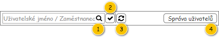

Uživatelské rozhraní poskytuje přístup k zobrazení přehledu uživatelů. Dále umožňuje využití nástrojů pro filtrování a řazení.
Rozložení obrazovky vychází z obecné struktury pro přehledy seznamů a číselníků, zde je tedy popsáno její použití.
Nadpis: Přehled uživatelů – viz Struktura přehledu.
Text tlačítka: Uživatelé – viz Struktura přehledu.
Nadpis: Uživatelé – viz Struktura přehledu.

Pokud uživatel vjede myší na prvek nástrojové lišty, je zobrazen ToolTip. V rámci ToolTipu, pokud není uvedeno jinak, je zobrazen text ve sloupci Komponenta.
| Callout | Komponenta | Nadpis | Typ komponenty | Příklad hodnoty | Hodnota | Výchozí hodnota | Formát | Zpřístupněná | Viditelná | Chování | Validace | Poznámka |
|---|---|---|---|---|---|---|---|---|---|---|---|---|
| 1 | Textový filtr | – | SearchBox | – | – | – | Pokud není v rámci ovládacího prvku zadán hledaný text, jsou na pozadí (placeholder) vypsány názvy sloupců, podle kterých je filtrováno (viz sloupce Chování). Mezi jednotlivými názvy sloupců je použit oddělovač: „/“. Tento text je zobrazován i v rámci bublinkové nápovědy ovládacího prvku. | Vždy | Vždy | Psaním filtruje řádky dle sloupců:
Poznámka: Ve sloupcích je vyhledáváno fulltextově. | – | – |
| 2 | Jen platní | – | Button
| – | – | – | – | Vždy | Vždy | Filtruje pouze platné zaměstnance – hodnota atributu Platnost do je nevyplněna nebo je vyšší nebo rovna dnešnímu datu a zároveň hodnota atributu Platnost od je je nižší nebo rovna dnešnímu datu. | – | – |
| 3 | Obnovit data | – | Button
| – | – | – | – | Vždy | Vždy | Načte aktuální data pro tabulku. | – | – |
| 4 | Správa uživatelů | – | Button | – | Správa uživatelů | – | – | Vždy | TODO: Přidat konkrétní právo z FLWW2. | Systém přesměruje uživatele do FLWW2 (Správa uživatelů-Uživatelé), kde nastaví filtry a řazení tabulky, vybere odpovídající stránku a případně označí vybraný řádek. Poznámka: FLWW2 tuto funkci zatím nepodporuje, dojde tedy pouze k přesměrování uživatele. | – | – |
Pro zobrazení záznamů v přehledu je použita běžná tabulka, viz 700UI01: Komponenty – tabulka. Z toho vyplývají jak její základní vlastnosti, tak i výchozí nastavení (např. počet záznamů, které je možné označit).
Tabulka je implicitně řazena vzestupně dle sloupce Uživatelské jméno.
| Sloupec | Nadpis | Možnost editace | Komponenta | Datový typ | Příklad hodnoty | Hodnota | Výchozí hodnota | Formát | Možnosti sloupce | Zpřístupněný | Viditelný | Chování | Validace | Poznámka |
|---|---|---|---|---|---|---|---|---|---|---|---|---|---|---|
| Uživatelské jméno | Uživatelské jméno | Ne | TextBox | Text | Admin | Entita Uživatel. | – |
| Nikdy | Vždy | – | – | – | |
| Zaměstnanec | Zaměstnanec | Ne | TextBox | Text | Jan Hraško (123456) | Entita Zaměstnanec – atribut Zaměstnanec entity Uživatel. | – | Pokud není dostupné Osobní číslo: |
| Nikdy | Vždy | – | – | – |
| Platnost od | Platnost od | Ne | TextBox | Datum | 10. 10. 2018 | Entita Uživatel. | – |
| Nikdy | Vždy | – | – | – | |
| Platnost do | Platnost do | Ne | TextBox | Datum | 10. 10. 2019 | Entita Uživatel. | – |
| Nikdy | Vždy | – | – | – |
Není.
Grafický návrh vychází z FLWW2 – Správa systému.